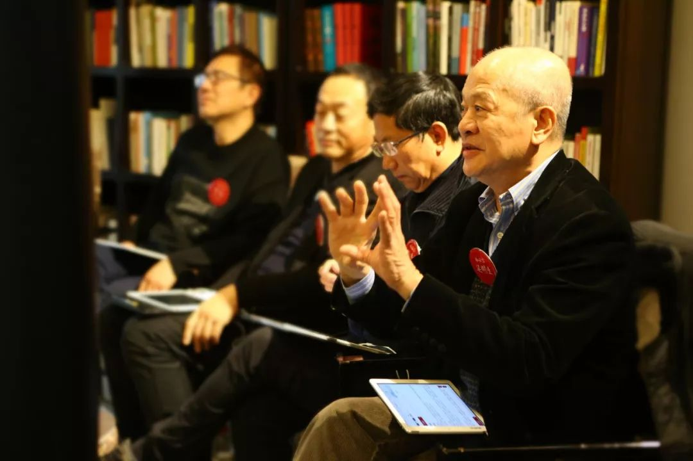
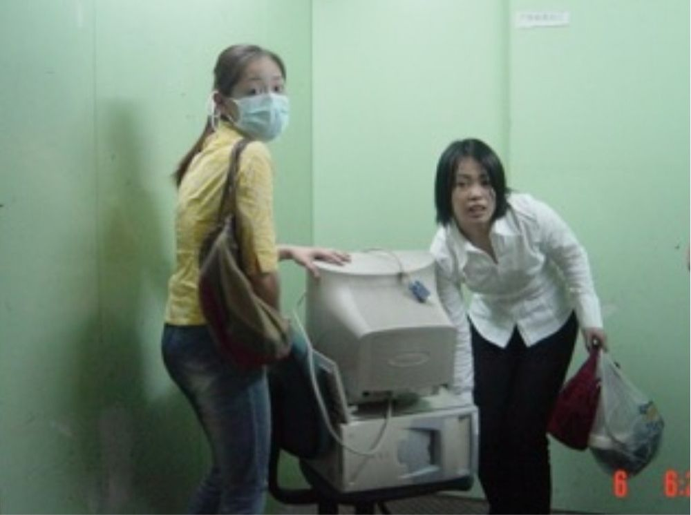
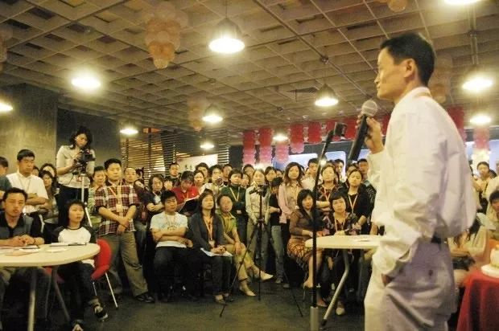

「 隔离日记 」 20200205
原文链接 备份链接 播放音乐 | 阅读效果更佳 感谢 | 您对霍超LEGAL的关注、阅读与分享 每天在小房间里最经常的就是看看各种视频网站，获取一些信息，更是缓解一些无聊，不过在潜移默化中，让我细思极恐的是的越来越精确的大数据算法，推送的 …

图：Savio在湖畔大学面试场
17年前，当时还是“中小企业”的阿里巴巴遭遇“非典”，总部所有员工被强制隔离两周，关明生（Savio）是时任COO，事件的亲历者和决策参与者。
疫情仍在继续，企业家们在承担社会责任积极支援前线的同时，也开始理性谋划应对之策。心胸与格局是从困难与创伤中锻炼出来的，面对灾难，活下来，就是胜利。
公司如何应对突如其来的危机？
危机来临时，领导层应该做什么？
支撑一支队伍战胜困难的基本动力是什么？
在这个时候，CEO要以什么样的心态面对挑战？
……
带着这些问题，我们采访了关明生先生，以下是他的口述。
01
得知可能被“隔离”
我们做了哪些准备
2003年初，阿里巴巴规模还较小，杭州总部几百人，全国有10多个办事处。
5月初，同事宋洁从广州回杭办公后出现感冒发烧，大家都开始很紧张了。当时杭州有一到两例疑似“非典”病人，都已经隔离到医院去了。
假如宋洁被隔离，那阿里在杭州的几百人怎么办？
那几天信息很不明朗。公司提前做了应急预案，马云、彭蕾等跟政府积极沟通信息，负责技术的吴妈（吴泳铭）、狮子（师昱峰）等人把公司的线路都调好，准备将来真的是要隔离的话，能保障所有人可以正常接电话、上网。
当时有一件很特别的事情发生，有很多同学主动跟我来讲，Savio，我要2000块。我说你要2000块干嘛？他说我已经有电脑了，要2000块搞个宽带，被隔离的话，我就可以在家里上班。我说好，就给他2000块，他签了白条给我。
陆陆续续很多同学在那段时间都来跟我拿钱，我都给，记得加起来发出去30几万人民币，当时那是很多钱了。
当时正是“五一”假期，我回到香港当天，就接到电话说宋洁作为“疑似病例”被送到定点医院隔离，杭州所有员工回到住处自我隔离。在几个小时内，所有的人拿了钱就去买东西，把电脑带回家，拉网线，买桌子生活用品等，准备回家办公。

这个过程是自发的，不需要管理层去说你们要做什么，所有的人自动来说我要做这个，我要做那个。公司联系了电信部门，派出技术保障同学，确保每位同事家里都能联网和接入公司系统。
我就在香港的家里隔离。我跟我太太都说好了，这个是大事，所以我们把遗嘱也写了。我记得我还有一封信写给我女儿，告诉他家里的东西在什么地方。
02
当时管理层在做什么
有很多人问，为什么当时阿里的员工能那么高效地来应对？
在我看，最关键的是公司的文化价值观。当时的员工是不可思议地团结，不可思议地自发。
要应对外来突发灾难的话，这两件事是最重要的，一是团结，二是自发。
每个人都知道选择的优先级是基于什么？当时我听了不止一次，他们都说，我们可以被关起来，但客户的服务不能中断。这个就是阿里的“客户第一”的文化价值观。要是这个文化不是早就做的话，碰到危难的时候，你只能发指令。当时阿里有一个很大的好处，就不需要做任何指令。
那隔离以后，我们管理层在干什么呢？
我记得马云天天打电话到隔离医院去，求他们，不要把宋洁跟另外那两个病人关在一起。因为他心里觉得宋洁应该是没事的，但要是病人关在一起，事情就更复杂了。所以，他就非常坚决地天天打电话给医院去做这个工作。
他跟我说了一句：“Savio，要是真出了事，我怎么把这个小姑娘交给她妈妈？”
我做什么呢？彭蕾给了我所有员工的电话号码。我就在香港的家里，一个固话，两个手机，每天打几百个电话去同学家里说：你好，我是Savio，现在情况怎么样等等。他们说：我们行的，我们现在怎么怎么样。
这个就是我能做的事情，这个时候，不能指挥，不能监督，这个时候一定要给大家鼓劲，给大家加油！
那时大家都隔离在住处，一天三餐都是别人送过来的，外面有一个锁，把里面的人锁起来。锁起来的人，有些是跟父母一起，有些是夫妻，有些是共同租公寓的同事而已，这是非常特别的一个情况。

被隔离的杭州是阿里巴巴的总部，外地还有十几个办事处，主要是销售同学。总部的职能不能瘫痪，否则整个公司就没法运转了。
我打电话到杭州任何一个同学的家，都是天使般的声音：“阿里巴巴，你好”。如果我是客户的话，我都不知道这个公司的员工被关起来了。每个人都很有朝气，跟在公司工作一样。
在杭州的同学，隔离在家里也很闷。他们白天在网上通过即时聊天工具、邮件、电话继续工作；晚上，还有同学搞了一个线上的卡拉OK飙歌比赛。这些都是苦中作乐，也让大家放松，鼓舞士气的好办法，这个很关键。
03
在当时不是机会
是巨大的挑战
后面很多人说“非典”对阿里来说是个机会，但当时我们面对的是巨大的挑战。
碰到这样的灾难，很多企业只能选择放假，当时员工心理压力也很大，他们完全可以说我已经很难过了，你还要我去听电话，还要我去帮助客户解决问题，还要打电话去做销售，你省省吧！
但当时没有一个人这么说，没有人掉队。大家不可思议的团结，不可思议的自发。我当时想，要是没有同学们的坚持，这些所谓“机会”的东西都等于零。
因为“非典”影响，没有企业主愿意见面交易，我们网站的流量瞬间多了7倍，技术同学最主要做的事情要保证不能宕机。业务量大大提升，这意味着同学们的工作量比正常时期更大，简直是焦头烂额。
隔离结束后，到6月1日，我们的其中一个部门电话销售部就做到了一百万销售额。电话销售当时是2300元一单，打100个电话大概有两个电话是成功的，打好几万个电话才可以做到一百万，他们付出了比平时更多的努力。
有一天我打电话给一个女同学，电话那头是一个有点沉的男低音，“阿里巴巴，你好”。我说：你是谁？他说：先生，你是不是有什么问题，如果是这个问题的话，我就可以帮你解决。我就跟他说：我是Savio啊。他说：Savio啊，我女儿和她妈妈在前面上网，给另外一个客户解决问题，我帮她接听电话。原来这是老爸，他已经把我们的业务流程了解了！
所以说不是“非典”带来了什么机会，是我们把这个灾难变成了一个推动力。因为这个团队非常之齐心，非常之团结，非常知道应该做什么，而且都是主动地去做。因为在这个情况之下，管理层是不可能指挥他做什么事的，我们能做的就是关心、鼓励，天天给他们打电话。
两周隔离期满后，我回到杭州，正好赶上宋洁被放出来。那一天，我、马云、马云太太三个人去医院接宋洁出来，我们四个人一见面抱头痛哭。这个是永远不会忘记的。
为什么哭？就是因为很宽心，宋洁同学没事，我们大家都没事。最重要的是宋洁同学没事，马云也放心了，因为他可以把宋洁的爸爸妈妈的女儿送回去了。
04
CEO一定要临危不乱
遇到类似“非典”、“新冠”这样的突发性、影响公司正常经营的危机时，每个公司应对的情况不一样，临时的应急举措当然重要，没有的话会乱。
但我认为最重要的还是基本功，就是平时的文化价值观建设，是大家共同认同的使命、愿景，只有这样才能保证坚定的团结与凝聚力，团结就不会害怕。

阿里巴巴2001年已经开始做文化价值观，2001年3月第一季度就开始把价值观纳入绩效考核，这个是不可思议的。已经有过2001、2002两年多的影响，各种各样的案例，大家的心态很好，遇到危机时的第一反应就是客户第一——“我们可能被关起来，但是，客户的服务不能中断。”
有了统一的信念，大家就有凝聚力，能团结，而且他们目标很清晰。没有人问这个时候我应该做什么，有客户的支持客户，后台的人帮助他们支持客户，服务不能断，机器不能宕，所有的人都在做自己应做的工作。
像遇到这次的“新冠”疫情，CEO们切忌不要急，一定要临危不乱，处变不惊，要非常清晰。
CEO一乱，公司肯定就乱了！
CEO不能做太多事情，一定要拣最重要的事情去做，每个公司最重要的事情不一样，归根结底是生意怎么继续，现金流不要断，供应链不要断。
另外一个，不管用什么办法，要把员工团结起来。一定要支持、鼓励员工，该花钱的地方花钱，熬过这段时间。这个时候就是考验大家基本功的时候了。
05
开工要做三件事
文化价值观是重中之重
不久之后我们会迎来正式的开工，我建议CEO要做三件事：
首先，寻找危机期间公司有什么弱点。
队伍能不能抗打压，能不能迅速恢复经营，不足的地方需要组织什么资源和人力去做改善。这场危机对中小企业来说，是一场严峻的压力测试。
开工的时候要明确、清晰地告诉同事们，面对这么大的压力，大家做得很好，但是另一方面也看出我们有一些漏洞。做认真一个总结，给大家一个很清晰的方向，让大家重新上路。
第二，经过这次危机，也要去思考更长远的东西。
公司最基本的商业模式是不是能够抗打压？要是不是的话，需要改变什么？要退一万步来问的是，我的商业模式是什么？
很多中小企业老板基本上都是边做边赚钱，但是很多时候没有去问我的商业模式是什么。因为他们忙，他们天天在打拼，天天要为各种各样的东西发愁，他们没有好好的坐下来想这个问题，现在有点时间的话就需要坐下来问这个问题了，我到底解决了什么客户需求？这种模式是不是可以用线上的方式来解决？
最后，还是要强调，一定要重视文化价值观。
文化价值观是一个公司主要的实力，而且是慢慢培养才能起来的实力。但当一个大灾难来的时候，这个东西能派上用场，公司不会散。这个东西你必需开始思考，开始做了。
文化价值观都是从真实的共同经历中锻造出来的。“非典”一战后来也沉淀为阿里文化的一部分，每年5月10日举办阿里日活动，邀请员工家人一起欢聚，就是为了纪念这次共同战斗的经历和精神。

其实，每一个公司都有文化价值观，对中小企业来说，实际上就是老板的文化价值观。阿里的文化价值观当年是马云跟他的18个罗汉共同经历那么多事情共同塑造的，不是我的文化，很多人误会以为Savio把文化带到阿里巴巴，是完全错的。文化已经有了，当时我们做的只是花了7个小时的时间把它过滤出来，提炼出来，把过去的东西都沉淀下来。
彭蕾带着同事们花了大量的功夫，用了三个月，把第一版的价值观“独孤九剑”的行为都写下来，这个行为是最关键的。把这些具体行为都写清楚的话，你就可以有抓手。
如果老板不做这个事，他不知道他的目标是什么，如果他的目标和使命是赚钱，那就已经有问题了，那么他的员工都是他赚钱的工具了，这样员工是留不住的。
很多中小企业老板不明白这件事情，以为使命愿景价值观是咨询公司帮忙搞出来的，有很多人说阿里的文化价值观很好，阿里有拥抱变化，我们也拥抱变化，阿里有客户第一，我们也有客户第一等等的。但是，这不是他们自己的，因为他们没有把它变成行为，这是一个很大的问题。
所以，每个中小企业老板要问，我的使命是什么？我是不是要在这个行业里面提供一些别人提供不到的东西。如果他不明白的话，怎么让员工明白上下一心要做的一件事是什么、两件事是什么、三件事是什么。
经过这件事，老板们要真正把文化价值观做扎实，要去思考怎么样把员工的长远的利益跟公司的长远利益绑在一起。最关键的是要练好内功，因为养兵千日用兵一时，练内功也一样，长期把内功练好，你的免疫力就会提高。
* 本文转自湖畔大学
原文链接 备份链接 播放音乐 | 阅读效果更佳 感谢 | 您对霍超LEGAL的关注、阅读与分享 每天在小房间里最经常的就是看看各种视频网站，获取一些信息，更是缓解一些无聊，不过在潜移默化中，让我细思极恐的是的越来越精确的大数据算法，推送的 …
原文链接 备份链接 限制入境措施带来的危害可能大于好处，因为这可能阻挡信息、医疗物资的流通，影响世界经济；尽管非洲仍未发现确诊案例，但医学专家们预计，疫情在非洲爆发的风险也不小 文 |《财经》记者 蔡婷贻 编辑 | 郝洲 日内瓦当地时间2 …
原文链接 备份链接 对于封城后的武汉及周边地区的人们来说，社区的存在感从未如此强烈，“隔离”成了生活中绕不开的关键词。今天的“武汉日常”每日书中，三位作者向大家展现了生活在疫区的真实感受。确诊和疑似数据增长的背后，是紧缺的医疗资源，是充 …
原文链接 备份链接 2月3日，武汉市洪山区驿海柏曼酒店，医生袁红在查看一名疑似患者的肺部CT，并告知病患“您目前的感染情况不严重，不要害怕”。该酒店的医生会根据疑似病患此前在医院得到的诊断，对其作大致的病情判断，并提供抗病毒、退烧的口服 …
原文链接 备份链接 在医学专家们看来，集中收留、隔离是第一步。接下来对疑似病患的确诊、分类诊治、收治入院，将是对医疗、物资、人员分配等多重资源配置能力的综合考验，相信各方面群策群力可以渡过难关 文 |《财经》 …